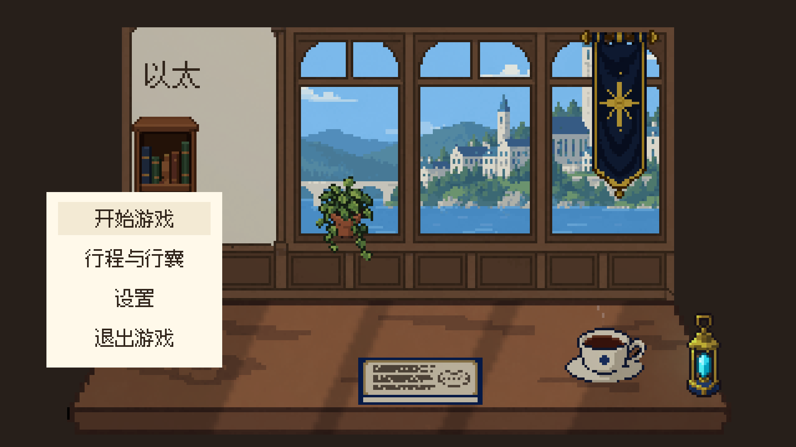
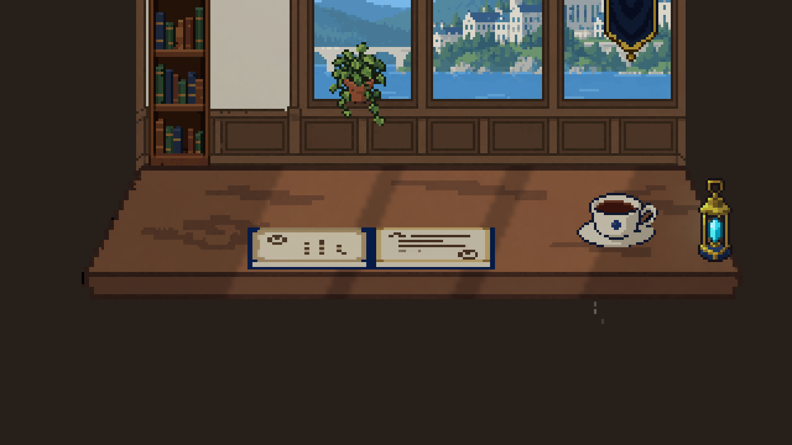
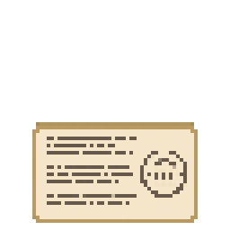
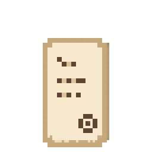
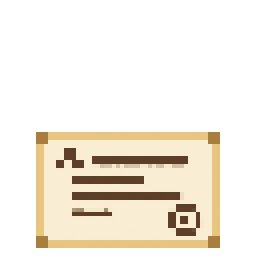

以太 · 装订册美术审阅
深蓝硬封＋独立封面纸签＋不同的左右内页＋书脊与页块。完整保留各材质的原生像素，以几何面组合成册。
无遮挡开合录像。固定书脊，封面展开后落回桌面；整场景统一320×180 Point渲染。素材已完成来源、网格、透明度、调色板、导入和运行检查，当前等待人工审美确认，状态仍为REVIEW_READY。
闭合与展开


实际入口
开始进入角色档案；继续回到隔离存档的学院地图。两条按钮路径通过，原存档受验证范围保护。
独立原生材质 · 四倍显示



纸签46×28，右页46×29，左页28×46横置使用，全部置于64×64原生画布。深蓝装订材质取自前轮合格封面原料的已有颜色，未重着色或绘制新位图。三张新原料独立生成，置信度分别1.337、1.3277、1.2863。新整幅封面三轮网格不稳定，全部淘汰；采用组合方式完成书本。
上一版结构样板 · 战斗外界面